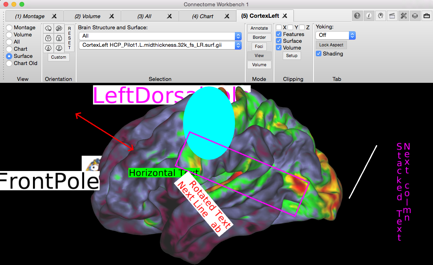
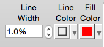
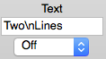
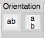
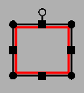
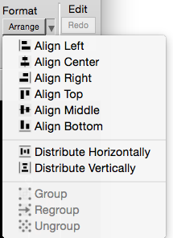
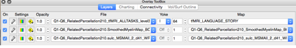
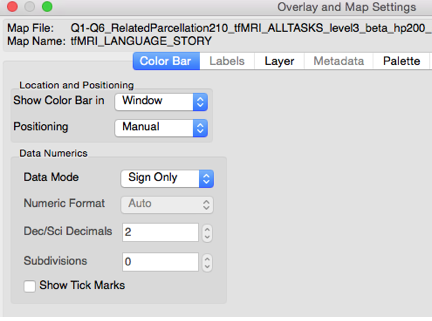
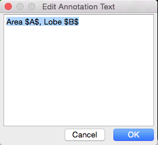
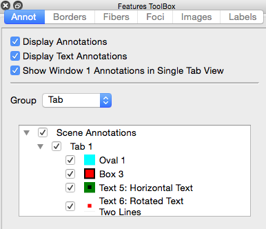

Guide to WB Annotations
07 May 2018

Table of Contents
Understanding the Need
for Locking the Aspect Ratio
Annotation Toolbar and
Example Annotations
Stereotaxic Coordinate
Space (St)
Annotation Line Width,
Line Color, and Fill Color
Annotation Text Alignment
Property
Annotation Coordinate
Property
Editing Annotation
Position, Size, and Rotation
Context Sensitive
(Pop-up) Menu
Display Control of
Annotations
Selection of Annotations
in Features Toolbox
Content of Annotations
Tab in Features Toolbox
Mouse Selection of
Annotations
Figure 1: Single Tab View................................................................................................... 5
Figure 2: Tile Tabs View..................................................................................................... 6
Figure 3: Annotations on Surface........................................................................................ 7
Figure 4: Width Increased with Unlocked Aspect Ratio...................................................... 8
Figure 5: Width increased with a Locked Aspect Ratio........................................................ 8
Figure 6: Figure from A multimodal parcellation of human cerebral cortex
(Glasser et al).. 9
Figure 7: Window with Annotation ToolBar..................................................................... 10
Figure 8: Surface with Annotations................................................................................... 13
Figure 9: Window Width Increased with Unlocked Aspect Ratio...................................... 13
Figure 10: Window Width Increased After Locking Aspect Ratio..................................... 13
Figure 11: Line Width and Line/Fill Color Controls.......................................................... 16
Figure 12: Line Arrow Tip Controls.................................................................................. 16
Figure 13: Text Characters and Offset (Surface Space only) Controls............................... 17
Figure 14: Text Font Attributes.......................................................................................... 17
Figure 15: Text Alignment Controls.................................................................................. 17
Figure 16: Text Orientation Controls................................................................................. 18
Figure 17: Coordinate Controls (Chart, Stereotaxic, Tab, Window).................................. 18
Figure 18: Annotation Coordinate (Chart, Stereotaxic, Tab, or Window).......................... 18
Figure 19: Surface Coordinate Controls............................................................................. 18
Figure 20: Width and Height Controls............................................................................... 19
Figure 21: Rotation Control............................................................................................... 19
Figure 22: Box in Red that is Selected for Editing............................................................. 21
Figure 23: Editing Redo and Undo Controls...................................................................... 22
Figure 24: Insert New Annotation Controls....................................................................... 22
Figure 25: Annotation File Selection Controls................................................................... 23
Figure 26: Delete Annotation Control................................................................................ 24
Figure 27: Format Menu Items.......................................................................................... 24
Figure 28: Features ToolBox Annotation Controls............................................................ 28
Figure 29: Overlay ToolBox.............................................................................................. 32
Figure 30: Overlay and Map Settings Color Bar Controls................................................. 32
Figure 1: Single Tab View

Figure 2: Tile Tabs View
Understanding the Need for Locking the Aspect Ratio
To create an optimal view of
a brain model, the user may adjust the size of the window and optionally remove
the Toolbar, Overlay Toolbox, and the Features Toolbox. As the window�s shape changes, the size
of displayed brain model is adjusted to best fill the available space. For a cerebral cortex model in a default
lateral view, the height of the cortex is set to be slightly smaller than the
height of its available area in the window. If this causes parts of the cortex to
exceed the width of the available are, the cortex is shrunk so that all of it
is visible.
Allowing an independent width
and height for the window is known as a variable aspect ratio. An aspect ratio is the ratio of height
to width (height divided by width).
Due to this variable aspect ratio, annotations in Tab and Window
Coordinate Space use a special two-dimensional coordinate system consisting of
percentages. In this percentage
coordinate system, the range for X-percentage coordinates range from 0% at the
left edge of the graphics region to 100% at the right edge. Correspondingly, Y-percentage
coordinates range from 0% at the bottom edge to 100% at the top edge. Thus, if one places an annotation at an
X-coordinate of 100%, this annotation will always be at the right edge of the
window, regardless of the window�s width.
While this percentage
coordinate system works well with a variable aspect ratio, it has a major shortcoming. If one places an annotation in Tab or
Window Space over an anatomical feature of a brain model and increases the
width (or height) of the window, the annotation may �drift� and no longer overlay
the anatomical feature. This anomaly
occurs because the size of the brain model does not increase in the same
proportion as the size of the window.
To correct this problem, wb_view provides (and strongly recommends)
locking of the aspect ratio. When
aspect locking is enabled, the aspect ratio at the time of locking is saved and
used when drawing brain models. If
the window is changed to a size that does not result in the same aspect ratio
as the locked aspect ratio, padding is added to the horizontal or vertical
sides of the window to limit the graphics region in a way that matches the
locked aspect ratio. For
example, suppose one creates two annotations in tab coordinate space, a red
oval and a fuchsia box as in Figure 3. Now suppose one increases
the width of the window while the aspect ratio is unlocked. Notice that the annotations no longer
overlay the original anatomical regions, Figure 4. However, if one locks the
aspect ratio and then increases the width of the window, padding is added to the
side of the window to restrict the model to an area with the aspect ratio from
the time of locking, Figure 5.

Figure 3: Annotations on Surface

Figure 4: Width Increased with Unlocked Aspect Ratio

Figure 5: Width increased with a Locked Aspect Ratio
In conclusion, locking the
aspect ratio should always be performed prior to creating annotations. In addition, once the aspect ratio is
locked, it should never be unlocked.
Otherwise, it will cause annotations to drift from their desired
locations.
Scenes
Closely related to
annotations are scenes. Scenes allow
one to preserve and reproduce �the state� of wb_view and are frequently used to
produce figures for publications. Scenes can be shared with
collaborators or with the neuroscience community through the BALSA
Database. Annotations are
frequently featured in scenes and allow one to highlight items of in the data
and present auxiliary information (Figure
7). Annotations are
typically saved within a scene which eliminates the management of an external
data file (although annotations may be stored in external data files).

Figure 6: Figure from A multimodal parcellation of human cerebral cortex (Glasser
et al)
Annotation Toolbar and Example Annotations

Figure 7: Window with Annotation ToolBar
Annotation Coordinate Spaces
Several coordinate spaces are
available for annotations. The
coordinate spaces control the movement of placement of annotations.
Chart Data Space (Ch)
An annotation in chart data
space is displayed within the char data plot and is invalid outside of the data
plot. The coordinate range is
identical to the X- and Y-axis of the displayed chart data. This is the range of data in the chart
changes, an annotation in chart data space will move.
Stereotaxic Coordinate Space (St)
An annotation in stereotaxic
space will appear in any display of a surface or a volume. A particular annotation in stereotaxic
space may appear in more than one location such as when viewing a surface
montage.
Stereotaxic space (Talairach is an example of a specific stereotaxic space) is
the three-dimensional coordinate system in which surface and volume models are
displayed. In Workbench, the
stereotaxic space is in an LPI orientation (negative X is Left, negative Y is
Posterior, and negative Z is Inferior).
Annotations in Stereotaxic Space will follow the model as it is panned,
rotated, or zoomed. At times,
annotations in Stereotaxic Space may not be visible when they are behind a
model. Annotations in Stereotaxic
Space are always drawn in a plane parallel to the screen.
Surface Coordinate Space (Sf)
An annotation in surface
coordinate space will appear in any view of the surface to which the annotation
is attached. When a surface space
is used, the annotation is associated with a surface by the combination of the
surface�s structure (ie: left cerebral cortex) and a
vertex index. An optional offset
vector is used to improve visibility of the annotation (so not �behind� the
surface).
Tab Coordinate Space (T)
An annotation in tab coordinate
space is displayed in a specific tab (uses tab number). When Tile Tabs is enabled, all of the
window�s tabs are displayed in a grid-like pattern. Tab Coordinate Space is a
two-dimensional space with the X- and Y-coordinates expressed in percentages
ranging from 0% to 100%. For the
X-coordinate, 0% is on the left and 100% is on the right. For the Y-coordinate, 0% is at the
bottom and 100% is at the top.
If Tile Tabs is enabled, the
coordinate range spans only cell allocation to that tab in the graphics
region. When the tab�s aspect is
locked, the locations of 0% and 100% may be offset from the graphics regions
edges so that annotations remain at a consistent location over an underlying
brain model.
Window Coordinate Space (W)
The window coordinate functions
nearly identically to the tab coordinate space except that the coordinates
always span the entire graphics region.
Tile Tabs has no effect on window coordinates.
Aspect Locking for Tab and
Window Coordinate Spaces
The graphics region in
wb_view defaults to a variable aspect ratio. With a variable aspect ratio, the user
may independently adjust the width and height of the window. Since the tab and window coordinate
spaces use a percentage coordinate system, annotations in these spaces will
move away from the center as the width or height is increased. Conversely, the annotation will move
towards the center as the width or height is decreased. For example, in Figure 9, a red oval and a fuchsia square annotation are displayed over a left
hemisphere. In one stretches the
width of the window with an unlocked aspect ratio, the two annotations move
away from the center but remain at the same percentage width coordinate, Figure 10. In contrast, if one locks
the aspect ratio and expands the width of the window, padding is added to the
sides so that the percentage coordinates remain limited to the original aspect
ratio, Figure 11. The result of aspect
locking is that the annotations remain over the same anatomical features as the
window�s size changes.
Figure 8: Surface with Annotations
Figure 9: Window Width Increased with Unlocked
Aspect Ratio
Figure 10: Window Width Increased After Locking
Aspect Ratio
Types of Annotations
Box
A box annotation is
positioned with one coordinate located at the center of the box. The box�s width and height are
�normalized� relative to the size of width and height of the tab or window
containing the box. Thus, a size of
100% will fill the tab/window horizontally. Boxes possess both Fill and Line colors
and one or both may be used.
Color Bars
Color bars are a special case
of annotations that pictorially describe the mapping of numeric data into a
color palette. Color bars are not
created like other annotation types but are enabled for display by pressing the
color bar button for a row in the Overlay ToolBox�s
Layers tab. Positioning of color
bars is performed automatically unless the user chooses to manually position
them. Color bars are limited to Tab
and Window spaces. Editing of color
bars is described at the end of this document.
Image
An image annotation is
positioned with one coordinate located at the center of the image. The height of image is specified as a
percentage of the region containing the image. As the region changes in height, a
corresponding change will occur in the height of the image. The width of the image will scale with
the height of the image using the aspect ratio of the image when it was
associated with the orientation.
Line
A line annotation contains
two coordinates with one located at each end point. Lines are colored using the Line Color
only. Arrows may be added to each
of the end points.
Oval
With the exception of the its
shape, an oval�s functionality is identical to a box.
Text
Text annotations contain one
coordinate and the text alignment properties control the offset of the text
relative to the coordinate. Text characters
are drawn in the Font Color. The
Line color, if enabled, draws a box around the text. The File color, if enabled, draws a
background behind the text. The
height of text is specified as a percentage of the region�s height containing
the text. As the region changes in
height, a corresponding change will occur in the size of the text.
Annotation Properties
|
Property |
Box |
Color Bar |
Image |
Line |
Oval |
Text |
|
Arrow Tips |
|
|
|
Y |
|
|
|
Line Width |
Y |
|
|
Y |
Y |
Y |
|
Line Color |
Y |
|
|
Y |
Y |
Y |
|
Fill Color |
Y |
Y |
|
|
Y |
Y |
|
Text Color |
|
Y |
|
|
|
Y |
|
Text Characters |
|
Y |
|
|
|
Y |
|
Font Name |
|
Y |
|
|
|
Y |
|
Font Size |
|
Y |
|
|
|
Y |
|
Font Style |
|
|
|
|
|
Y |
|
Horizontal Alignment |
|
|
|
|
|
Y |
|
Vertical Alignment |
|
|
|
|
|
Y |
|
Orientation |
|
|
|
|
|
Y |
|
Width |
Y |
Y |
Y |
|
Y |
|
|
Height |
Y |
Y |
Y |
|
Y |
|
|
Rotation |
Y |
Y |
Y |
Y |
Y |
Y |
Annotation Line Width, Line Color, and Fill Color
The Line Width Property controls
the line width of Line annotations and the outline width of Box, Oval, and Text
annotations. Line widths are
expressed as a percentage of the height of the region containing the annotation. When multiple annotations are selected
with different line widths, the smallest selected line width is displayed
followed by a plus symbol (+).
The Line Color Property
controls the outline color of a Box, Oval or Text. To change the color, one presses the
small arrow to display a menu containing the available colors. The two special selections are Custom
and None. Choosing Custom displays
a dialog that allow the user to create a color by adjusting red, green, and
blue color components. None inhibits
the drawing of the associated line.
The Fill Color Property controls
the background color for a Box, Oval, or Text annotation and its functionality
is the same as the Line Color property.

Figure 11: Line Width and Line/Fill Color Controls
Annotation Line Arrow Tips

Figure 12: Line Arrow Tip Controls
The Annotation Line Arrow
Tips section controls the addition of arrows to the end points of a line
annotation. The top arrow button
adds an arrow to the line�s start and the bottom arrow button adds an arrow to
the line�s end.
Annotation Text Characters
The Text section allows the
user to edit the text of the selected Text Annotation (when one and only one
annotation is selected). Multiple
lines of text are separated by a �\n� character sequence. The combo box in the second row allows
the user to connect a text annotation in Surface Space to the surface vertex
with a line or an arrow. When
connecting a text annotation to the surface, the offset in the surface
coordinate often needs adjustment.
In addition, one may double-click the text annotation to edit the text
in a multi-line editor.

Figure 13: Text Characters and Offset (Surface Space only) Controls
Annotation Text Font Property
Font Properties associated
with Text Annotations include the Font Name, the Font Size, the Text Color and
options for Bold, Italic, and Underline.
When multiple annotations are selected, the first matching font and smallest
font size is selected. The Bold,
Italic, and Underline buttons are selected only if all selected text
annotations have the attribute enabled.
Figure 14: Text Font Attributes
Annotation Text Alignment Property
Text Alignment Properties provide
options for both horizontal (top row) and vertical alignment (bottom row) of
text. Horizontal options allow left-aligned
text, center-aligned text, or right-aligned text. Vertial
options allow for top-aligned text, middle-aligned text, or bottom-aligned
text.
When there are multiple text
annotations selected with different alignments, none of the alignment buttons appear
in selected state.
Figure 15: Text Alignment Controls
Annotation Text Orientation
The text orientation property
includes two selections, Horizontal and Stacked. Text characters drawn in
Horizontal Orientation are drawn in a left-to-right sequence. Text characters drawn in Stacked
Orientation are drawn in a top-to-bottom sequence. If there are multiple text annotations
selected with differing orientations, neither of the orientation buttons is
shown as selected.

Figure 16: Text Orientation Controls
Annotation Coordinate Property
With the exception of Surface
Space, the coordinates for annotations are specified with XYZ-coordinates. If the annotation is in Surface Space,
selections are provided for the Structure, Vertex Index, Offset Mode (C or N),
and Offset Distance. The Centroid
(C) Offset Mode uses a vector from the centroid of the surface through the
vertex. The Normal (N) Mode offsets
using the vertex�s normal vector. Line
annotations contain coordinates for each endpoint and all other annotations use
a one coordinate.

Figure 17: Coordinate Controls (Chart, Stereotaxic, Tab, Window)
Figure 18: Annotation Coordinate (Chart, Stereotaxic,
Tab, or Window)
Figure 19: Surface Coordinate Controls
Located on the left side of
the coordinate controls are alphanumeric characters that display an abbreviated
name for the coordinate space of the selected annotation(s). If all of the selected annotations are
in the same coordinate space, the letter will be Ch
(Chart Data), Sf (Surface), St (Stereotaxic) T (Tab, followed by tab numbers),
and W (Window). If multiple annotations
are selected and they are in different coordinate spaces, a plus symbol (+) is
displayed. The coordinate controls
are enabled only when a single annotation is selected.
Annotation Width and Height
The Annotation Width and Height
Properties control the width and height of Box, Image, and Oval
Annotations. Both the width
and height are normalized values that range from 0% to 100% where 100% is the
full width/height of the tab or window.
For image annotations, adjusting the width (or height) will also change
the height (or width) of the image so that the image�s aspect ratio is
preserved to prevent distortion of the image.

Figure 20: Width and Height Controls
Annotation Rotation Property
The Annotation Rotation property
controls the rotation annotations.
The rotation value is in degrees and a positive value rotates clockwise.


Annotation Files
There two mechanisms for
saving annotations.
Disk Annotation File
Disk Annotation Files can be
opened, saved, added to a Spec File just like other Workbench data files.
Scene Annotation File
The Scene Annotation File is
maintained �in memory� and when the user creates a Scene, these annotations
become part of the scene. Thus,
these annotations can only be displayed when the scene is loaded. A special entry is provided on the
Manage/Save Files Window to remove all active Scene Annotations.
Selecting Annotations
To select a single annotation
while in Annotations mode, simply move the mouse over the annotation (the cursor
will become a �four arrows� symbol) and click the mouse.
To select multiple
annotations, hold down the Shift Key while clicking the mouse over an
annotation. When the mouse is
clicked with the Shift Key down, any other selected annotations remain selected.
If an annotation that is a member of a group is selected, all annotations in
the group become selected.
To deselect all annotations,
click the mouse in a region where there is no annotation. If there are multiple annotations
selected and one wants to deselect an annotation, click the mouse over the
annotation while holding down the Shift Key.
When an annotation is in the
selected state, sizing handles are displayed around the annotation. For a Line Annotation, sizing handle
symbols are drawn at the end points with a slightly larger square symbol at the
first coordinate (head of the arrow).
For a Box or Oval Annotation, a box is drawn in the foreground color with
sizing handles distributed about the box.
When the mouse is moved over a sizing handle, the mouse cursor will
change to a symbol that indicates how moving the size handle with the mouse
will change the shape of the annotation.
Editing Annotation Position, Size, and Rotation
To move an annotation, first
select the annotation and move the mouse over the annotation so that the cursor
is the four arrows symbol. Hold
down the left mouse button and then drag the mouse to move the annotation to
its new location.
To resize a line annotation,
first select the line annotation.
Next, move the mouse over a sizing handle at either end of the line so
that the cursor becomes a �two arrow� symbol. Now, hold down the left mouse button and
drag the line end point to its new location.
To resize a box or oval
annotation, first select the annotation.
Next, move the mouse over one of the sizing symbols so that the cursor
becomes a �two arrow� symbol. Now,
hold down the left mouse button and drag to change the width and/or height of
the shape. Dragging the circular
symbol at the corners changes both the width and height of the shape. Dragging the square symbol on a side
changes width or height but not both.

Figure 22: Box in Red that is Selected for Editing
To rotate a box, image, oval,
or text annotation, first select the annotation. Next, move the mouse over the small rotation
handle at the top of the shape (small black circle attached to box around TEXT)
at which time the cursor will become a rotation symbol. Now, to rotate the annotation, hold down
the left mouse button and drag the mouse away from the annotation to the
desired orientation. The rotation handle will always point towards the mouse
pointer so it is important that the mouse is moved away from the
annotation. If the mouse is over
the annotation, rotation will be erratic and difficult.
Annotations may also be
moved, resized, and rotated using the annotation toolbar�s controls while a
shape is selected.
Editing (Redo and Undo)
Figure 23: Editing Redo and Undo Controls
When editing annotations, the
user may mistakenly modify or delete an annotation. For these instances, pressing the Undo
button will �undo� the last change to an annotation. Redo and Undo can also be used with
grouping operations (described later in this document).
Inserting Annotations

Figure 24: Insert New Annotation Controls

Figure 25: Annotation File Selection Controls
When creating annotations,
new annotations are placed in either �Scene Annotations� or an Annotation File
stored to disk. Scene Annotations
are not saved to an annotation file but instead are added to a scene when a a new scene is created. Note that the user will need to save the
scene file. Disk annotation files
are saved and opened like other data files.
To create a new annotation, one
must first choose the file that will contain the newly created annotation (the
default is Scene Annotations). Once
the file is selected, it is not necessary to select a file unless one wants to
change the file. Second, the user
must choose the Space from the top row of buttons (the selected space is
highlighted). Third, the user must click
one of the type buttons in the bottom row to choose the type of annotation that
is created. Lastly, the user moves
the mouse into the graphics region at which time the mouse pointer becomes a
small �plus� symbol. The user must
either click the mouse in the graphics region to insert a default annotation
for the type or drag the mouse to create a rectangular region that bounds the
new annotation. If the location of
the new annotation is incompatible with the selected annotation space, a dialog
pops up that allows the user to choose a different space or to cancel creation
of the annotation. When entering a text annotation, a dialog will always pop-up
for entry of the text.
BEWARE that when drawing
annotations in surface space, the annotation may move a short distance from
where it was drawn. This is caused
by the surface offset attribute of the surface coordinate. While the annotation is attached to the
surface vertex closest to the mouse click, the annotation is offset by a
vector. It is this offset vector
that causes the annotation to move.
Without the offset vector, surface annotations may be partially or even
fully obscured by the surface.
Deleting Annotations

Figure 26: Delete Annotation Control
Individual annotations are
deleted while in Annotation Mode by clicking the Trash Can Icon in the
Annotation Toolbar. One may remove
an entire file of Annotations on the Manage/Save Files window.
Format
Figure 27: Format Menu Items
The arrange menu is used to
arrange and format multiple annotations.
At least two annotations must be selected for an alignment
operation. At least three
annotations must be selected for a distribute operation. Alignment and Distribution operations
may only be performed on annotations in Tab or Window space.
� Align Left � The selected annotations are moved so
that the left edge of each annotation is at the same X-coordinate as the
left-most annotation.
� Align Center � The selected annotations are moved so
that center X-coordinate of each annotation is at the average X-coordinate of
the annotations.
� Align Right � The selected annotations are moved so
that the right edge of each annotation is at the same X-coordinate as the
right-most annotation.
� Align Top - The selected annotations are moved so that
the top edge of each annotation is at the same Y-coordinate as the top-most annotation.
� Align Middle � The selected annotations are moved so
that the center Y-coordinate of each annotation is at the average Y-coordinate
of the annotations.
� Align Bottom - The selected annotations are moved so
that the bottom edge of each annotation is at the same Y-coordinate as the
bottom-most annotation.
� Distribute Horizontally � The left-most and right-most
annotations do not move. The other
annotations are moved so there is equal horizontal spacing between adjacent
annotations.
� Distribute Vertically - The top-most and bottom-most
annotations do not move. The other
annotations are moved so there is equal vertical spacing between adjacent
annotations.
� Group - See the description in Annotation Grouping.
� Regroup - See the description in Annotation Grouping.
� Ungroup - See the description in Annotation Grouping.
Context Sensitive (Pop-up) Menu
A pop-up menu is available when
the Mode (mouse) is Annotate. This
menu is displayed when the user places the mouse over an annotation and
right-clicks the mouse (Control key held down with mouse click on Mac). Items in the menu are enabled only in
certain conditions.
Items in the pop-up menu are:
� Cut � Removes the annotation under the mouse and
places it onto the annotation clipboard.
� Copy � Copies the annotation under the mouse and
places it onto the annotation clipboard.
� Delete � Deletes the annotation under the mouse.
� Duplicate to Tab � When this item is enabled, it
displays a menu listing the tabs to which the annotation may be pasted.
� Paste � Inserts a copy of the annotation on the
clipboard at the mouse location. If
the mouse location is incompatible with the annotation�s space, a dialog is
pops up to change the space or cancel the paste operation.
� Paste and Change Space � Pops up a dialog to choose
the space and then pastes a copy of the annotation from the clipboard in the
selected space.
� Select All � Selects all annotations displayed in the
window.
� Edit Text � Pops up a dialog for changing the text in
a text annotation.
� Turn Off Stereotaxic/Surface Annotation Display in
Other Tabs � The
display of the selected annotations is turned off in all tabs
except the tab in which this menu items was selected.
� Turn On Stereotaxic/Surface
Annotation Display in All Tabs � The display of the selected annotations is turned
on in all tabs.
� Turn On Stereotaxic/Surface
Annotation Display in All Groups � The display of the selected annotations is
turned on in all Display Groups (A, B, C, D).
� Turn On Stereotaxic/Surface
Annotation Display in Only in Group � Allows selection of a Display Group and
the selected annotations are set to only display in the selected Display Group.
� Group � See the description in Annotation Grouping.
� Ungroup � See the description in Annotation Grouping.
� Regroup � See the description in Annotation Grouping.
Edit Menu
The Window�s Edit Menu is
available for some operations.
� Undo � Rolls back the last annotation modification (additional
text is added to the Undo item providing information about the modification).
� Redo � Rolls back the last �undo� (additional text is
added to the Redo item providing information about the modification).
� Cut � See Cut under Context Sensitive (Pop-up) Menu.
� Copy � See Copy under Context Sensitive (Pop-up) Menu.
� Paste � See Paste under Context Sensitive (Pop-up)
Menu.
� Paste Special � See Paste and Change Space under
Context Sensitive (Pop-up) Menu.
� Delete � See Delete under Context Sensitive (Pop-up)
Menu.
� Select All � Selects all annotations displayed in the
window.
Display Control of Annotations

Figure 28: Features ToolBox
Annotation Controls
Controlling the display of
annotation is performed using the Annot section in
the Features Toolbox.
Options
Display Annotations � Enables
and disables the display of all annotation types in all open windows.
Display Text Annotations �
Enables and disables the display of text annotations in all open windows. Note that the Display Annotation
checkbox affects all annotations including text annotations.
Show Window Annotations in
Single Tab View � When checked, annotations in Window space are always
displayed. When unchecked,
annotations in Window space are only displayed when Tile Tabs is enabled.
Group � Group
allows the user to easily switch between several different display selections
of annotations.
The display selections for
annotations in window space function different than other spaces. Because the �Group� selection is a
property of each browser window �tab�, it is not available when drawing Window
annotations. Therefore, there is
only one display selection for annotations in window space.
Selection of Annotations in Features Toolbox
To select an annotation in
the Features Toolbox, the user clicks the mouse over the name of the
annotation. The annotation name is selected and all other annotations are
deselected. The selected annotation is highlighted in the graphics
region. The user may select multiple annotations in the features toolbox
by holding down the CTRL (Apple) key or the Shift key. If the CTRL key is
held down while the mouse is clicked, the annotation under the mouse is added
to the selected annotations. If the Shift key is held down while the
mouse is clicked, all annotation from the last selected annotation to the
annotations under the mouse are selected.
If the user clicks the name
of either group type, Space or User, all annotations in the group are selected.
If the user selects the name of annotation that is in a User Group, all
annotations in the User Group are selected.
Content of Annotations Tab in Features Toolbox
In the Features Toolbox,
annotations are grouped into a hierarchy of File, Group, and Annotations.
The hierarchy is collapsed and expanded using the small triangles on the
left side of the annotation listing. There are three checkbox states, unchecked,
partially checked, and checked. An annotation is either unchecked (not
displayed) or checked (is displayed). An Annotation Group (and File) is
unchecked when all annotations in the group (file) are unchecked (not
displayed); partially checked when some, but not all annotations in the group
are checked (displayed), and the group (file) is checked when all annotations
in the group are checked (displayed).
For each annotation in the
features toolbox, an icon (small image) is displayed between the checkbox and
the annotation�s name. This icon may consist of several colors. If
the annotation's �Fill Color� is enabled, the background of the icon is the
fill color. If the annotation�s line color is enabled, the edges of the
icon are drawn in the line color. If the annotation is a text annotation,
a small square consisting of the text character�s color is in the center of
icon.
Annotation Grouping
Annotations are organized
into a hierarchy consisting of File->Group->Annotation. There are
two types of groups: Space Groups and User Groups. By default, an
annotation is assigned to a Space Group. The user may move annotations
from a Space Group to a User Group by performing a �Group� operation.
Annotations may also be moved from a User Group to a Space Group by
performing an �Ungroup� operation.
Both types of groups may only
contain annotations that are in the same coordinate space. Stereotaxic
annotations are assigned to one group. Surface annotations are also in
one group. There is a group for each tab and a group for each window.
Mouse Selection of Annotations
To select an annotation with
the mouse, the user simply clicks the mouse over an annotation. The
annotation under the mouse is selected and any other annotations are
deselected. To select multiple annotations the user clicks the annotation
with the mouse while the Shift key is held down. To deselect all
annotations, the user clicks the mouse in an empty region (not over an
annotation).
If the user selects an
annotation with the mouse and the annotation is in a User Group, all
annotations in the User Group are selected.
Creating a User Group
Creation of a user group is
allowed when two or more annotations are selected and all of the selected
annotations are in the same Space Group. If these conditions are met, the
user may create a User Group by selected Group from the Annotation Toolbar�s
Format->Arrange Menu. The user may also right click the mouse and
select Group from the pop-up menu.
Removing a User Group
To remove a User Group, the
annotations in the User Group must be selected (recall that clicking any
annotation in a User Group selects all annotations in the User Group).
The annotations are returned to a Space Group by selecting
Ungroup from the Annotation Toolbar�s Format->Arrange Menu. The
user may also right click the mouse and select Ungroup from the pop-up menu.
Recreating a User Group
To recreate a User Group, the
user must select at least one annotation that is currently in a Space Group but
was previously in a User Group. If these conditions are met, the user may
recreate the User Group by selected Regroup from the Annotation Toolbar�s
Format->Arrange Menu. The user may also right click the mouse and
select Regroup from the pop-up menu. All annotations that were previously
in the User Group are moved back to the User Group.
Color Bar Editing
Each overlay contains one
color bar that is available when the selected overlay is mapped using a color
palette (typically for floating point data). To show a color bar, press the rainbow
button under Settings in Overlay ToolBox->Layers. To Edit the color bar, press the wrench
icon.

Figure 29: Overlay ToolBox

Figure 30: Overlay and Map Settings Color Bar
Controls
Location and Positioning
This section controls the
coordinate space and location within the space (tab or window)
for the color bar.
Show Color Bar in Sets the allowable space for the color bar. Tab
restricts the color bar to the region in which the tab�s data is drawn. Window
allows drawing of the color bar in an area of the window.
Positioning When Automatic
is selected, the color bar is positioned in the bottom left corner of the
tab/window. If there is more than one color bar, they are vertically stacked.
Manual allows the user to
manually position the color bar by selecting the color bar (click it in
Annotations Editing Mode) and dragging it with the mouse or using the
coordinate controls in the annotation�s editing toolbar. It is not necessary to switch the
Positioning Mode to Manual to move the color bar. Simply select the color bar and drag it
with the mouse and the Positioning will immediately change to Manual.
Data Numerics
Data Mode
Controls format of numeric above color bar. When Data is selected, the numeric text above the color bar reflects
numerical values within the data.
With Percentile
the values above the color bar are percentages within the range of data. When Sign Only is selected, a plus and/or minus indicate the polarity of
the data.
Numeric Format
Controls the formatting of numeric text above the color bar. With Auto, the choice of decimal or scientific notation and digits right
of the decimal point is automatically chosen to best represent the data values. Decimal
format ensures the data is in a decimal format. Scientific
displays the data using scientific notation.
Dec/Sci Decimals Enabled when Numeric Format is Decimal or Scientific
and controls the number of digits right of the decimal point.
Subdivisions
By default, the numeric text above the color bar consists of a negative value,
zero, and a positive value.
Subdivisions is used to add additional values between zero and
negative/positive.
Show Tick Marks
If checked, a small tick mark is displayed below each numeric text value to
indicate its exact position in the color bar.
References:
Glasser MF, Coalson TS,
Robinson EC, et al. A multi-modal parcellation of
human cerebral cortex. Nature.
2016;536(7615):171-178. doi:10.1038/nature18933.